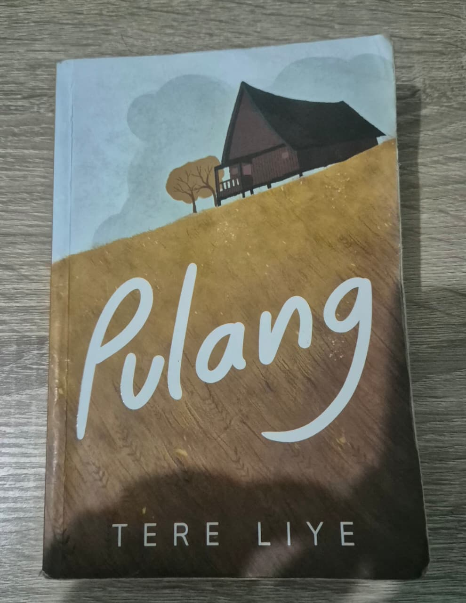
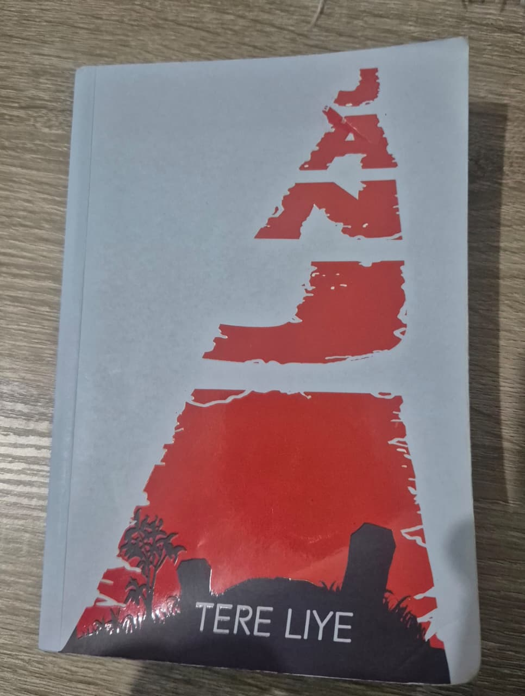
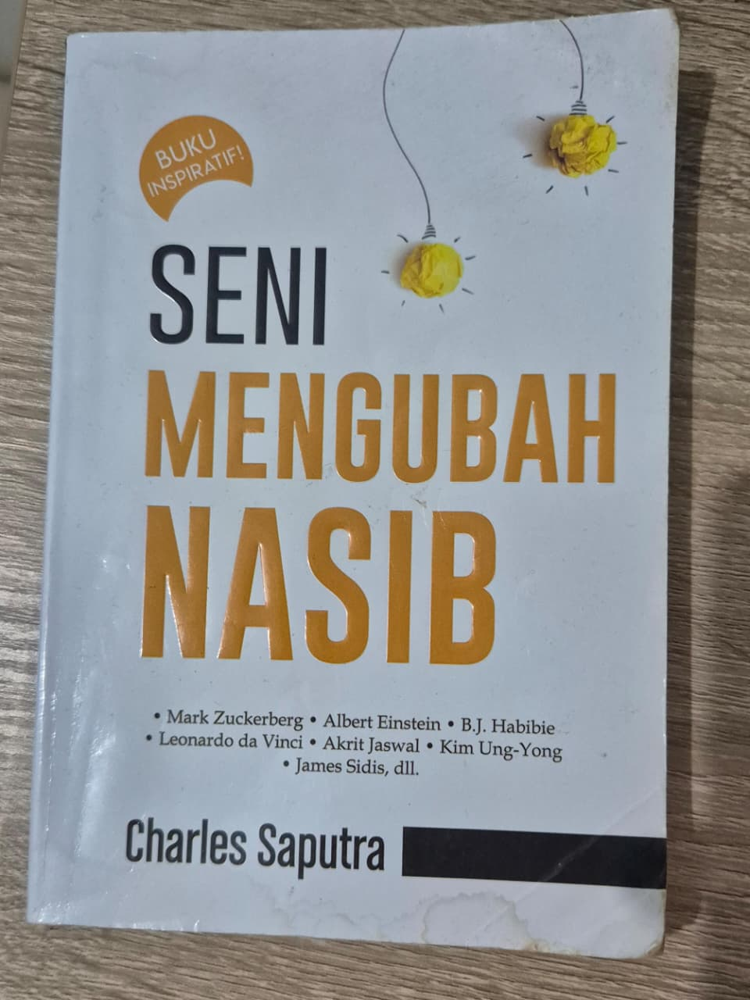
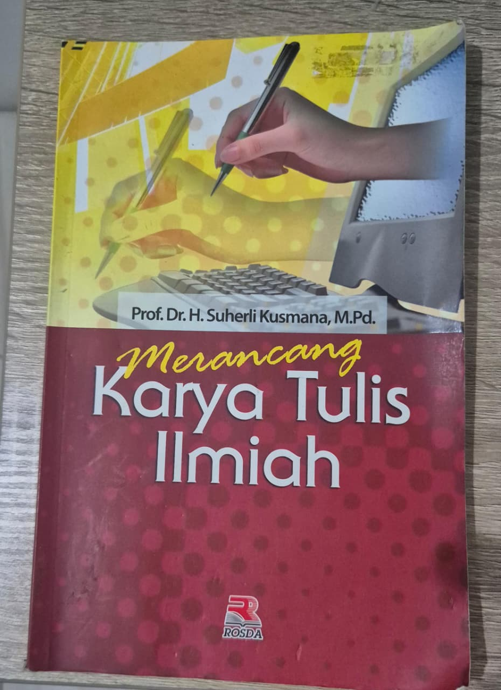
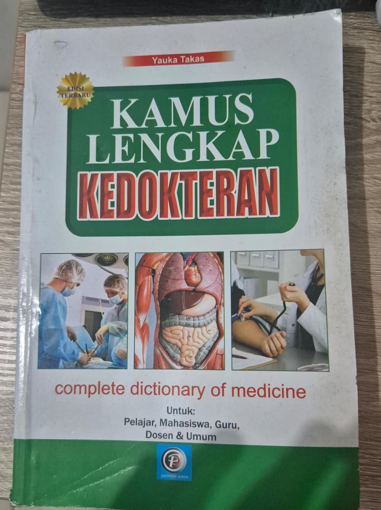
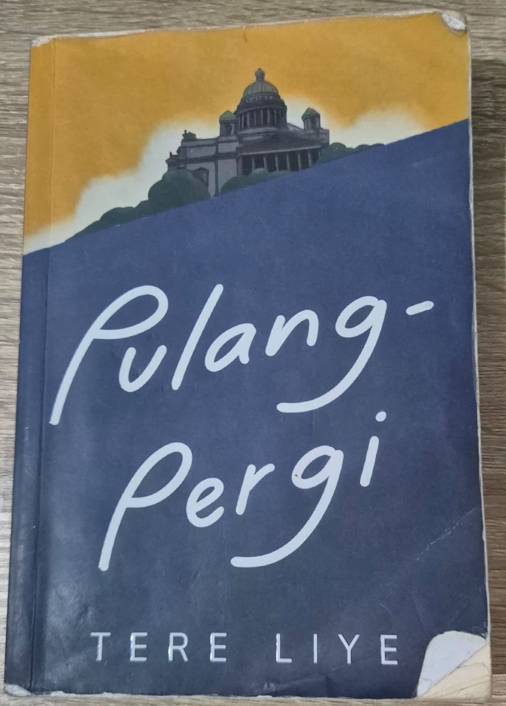
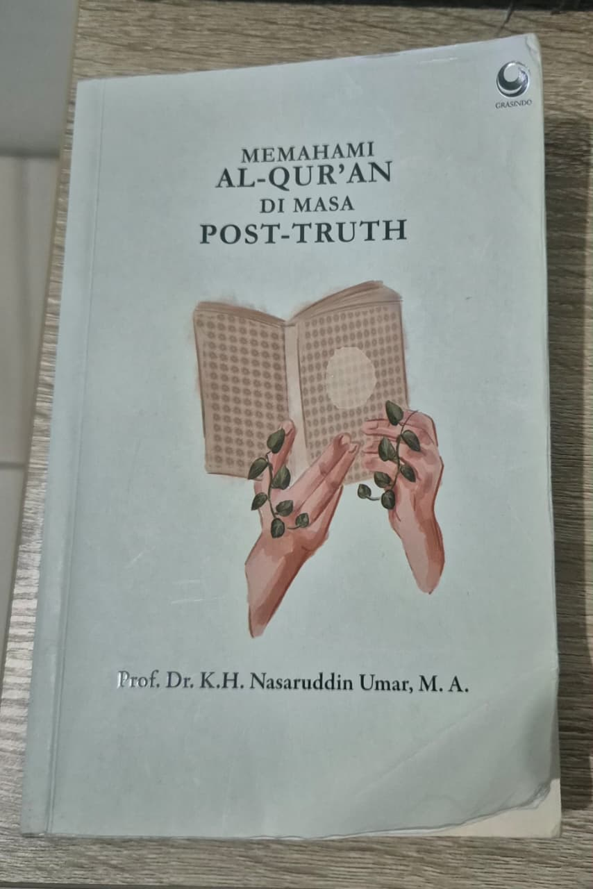
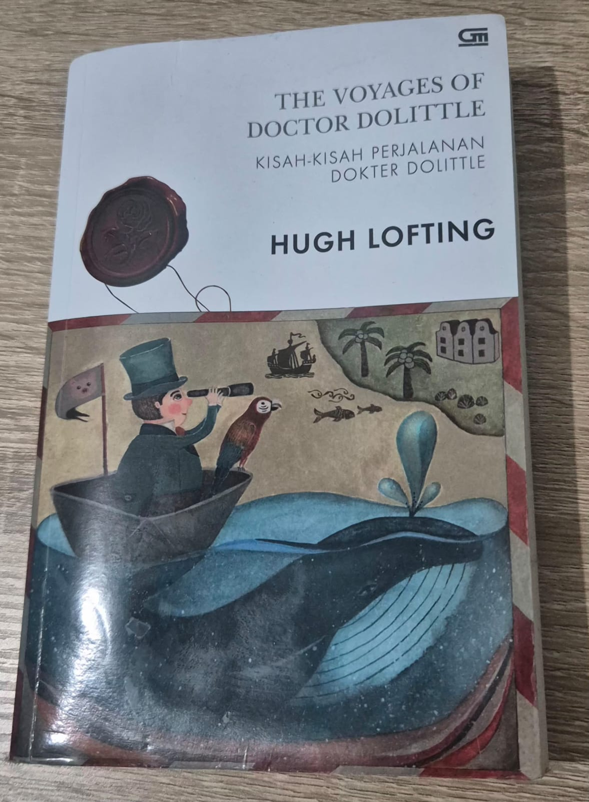

-

Pilih BukuPulang
Harga: Rp 45.000
Sebuah kisah tentang perjalanan Pulang. Melalui pertarungan demi pertarungan. Kesedihan demi kesedihan. untuk memeluk erat semua kebencian dan rasa sakit. Untuk membuka rahasia masa lalu. Pun menatap masa depan. Pulang
-

Pilih BukuJanji
Harga: Rp 50.000
menceritakan tentang 3 sekawan bernama Hasan, Baso dan Kahar yang mendapat tugas dari Buya untuk mencari mantan santri sang ayah 40 tahun lalu bernama Bahar. Hal ini merupakan salah satu konsekuensi yang diterima mereka karena menjaili tamu agung yang dengan memasukan garam ke dalam minumannya. Tak hanya itu, 3 sekawan merupakan murid nakal yang gemar membuat onar.
-

Pilih BukuSeni Mengubah nasib
Harga: Rp 48.000
Buku ini membicarakan perihal tabiat harian dan cara belajar figura-figura genius dunia yang dapat dijadikan sebagai panduan dan suri teladan. Mereka terdiri daripada golongan ilmuwan yang memiliki tahap kepintaran tinggi dan luar biasa dalam peradaban dunia.
-

Pilih BukuMerancang Karya Tulis Ilmiah
Harga: Rp 40.000
Buku ini membahas mengenai karakteristik karya tulis ilmiah, struktur karya tulis ilmiah, juga tentang teknik penyusunan karya tulis ilmiah. Buku ini sebagai pedoman atau acuan dalam penulisan karya ilmiah.
-

Pilih BukuKamus Lengkap Kedokteran
Harga: Rp 70.000
Kamus ini memuat banyak sekali istilah-istilah dalam dunia kedokteran yang sering digunakan dalam praktek dan dunia pendidikan.
-

Pilih BukuPulang-pergi
Harga: Rp 42.000
Ada jodoh yang ditemukan lewat tatapan pertama. Ada persahabatan yang diawali lewat sapa hangat. Bagaimana jika takdir bersama ternyata, diawali dengan pertarungan mematikan? Lantas semua cerita berkelindan dengan, pengejaran demi
-

Pilih BukuMemahami Al-Qur'an di Masa Post-truth
Harga: Rp 60.000
Buku ini menunjukkan hasil pembacaan Al-Qur’an dalam berbagai perspektif. Mulai perspektif inderawi artinya Al-Qur’an dibaca dengan hanya melibatkan mata yakni membaca huruf demi huruf Al-Qur’an. Atau, dengan perspektif rasional-akademik yaitu dibaca dengan kritis, apa, bagaimana, di mana, untuk apa, dan kepada siapa, serta konteks ayat-ayat itu diturunkan.
-

Pilih BukuThe Voyages of Doctor Dolittle
Harga: Rp 40.000
Dokter Dolittle pergi berlayar bersama Tommy Stubbins, asisten kecilnya, juga Polynesia si burung nuri dan Chee-Chee si monyet, serta beberapa teman setianya ke Pulau Monyet Laba-Laba. Di tengah perjalanan, kapal mereka karam dan mereka mendarat di sebuah pulau terapung yang misterius. Di sana mereka bertemu dengan siput raksasa yang menyimpan suatu rahasia yang luar biasa.